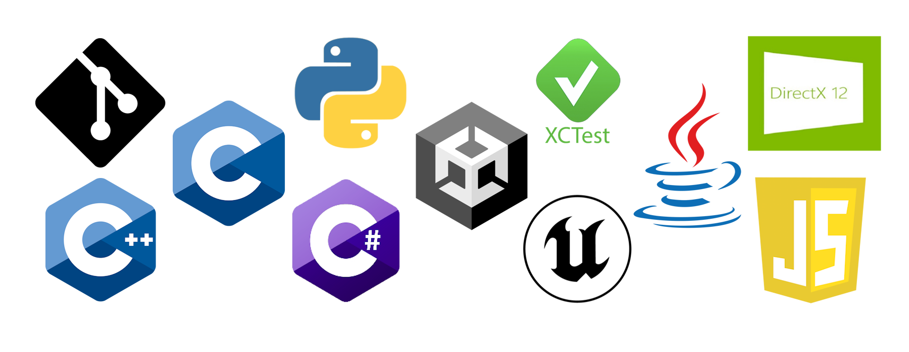

Software Engineer
Hello! I’m Daycee Duncan! I’m a software engineer with experience in software development, video game development, automation, and more. I have a passion for taking on challenging projects and finding innovative solutions for issues that don’t have a direct way to solve. I’m very devoted to delivering strong, functional code with no flaws. I’m fast at learning new systems and processes for working as a team.
Feel free to explore my portfolio to see some of the work I've done and learn more about my background.
7 years of experience using C++ and Python
5 years of experience using Git version control
3 years of experience using Java
2 years of XCUI automation
Practiced with C, C#, and JavaScript
Practiced graphics rendering with SFML, DirectX12, Unity, and Unreal Engine
Dates: August 2016 - May 2021
BA in Computer Science
Dates: September 2022 - Present
I was contracted to Charles Schwab to work as a QA and XCUI automation specialist. I worked on several important features: Remote Deposit Capture, External Account Verification, Bill Pay, Zelle, and eAuth. I developed, maintained, and/or refactored all XCUI automation scripts for each of these features while keeping up with all scrum work each sprint.
Dates: February 2022 - September 2022
I was responsible for filing weekly and monthly MSA reports for all companies contracted with our services. I developed python scripts to automate taxes for each U.S. state to calculate taxes for tobacco, motor fuel, alcohol, and retail sales. I conducted several meetings with new clients to help them connect to our api so they could automatically calculate their taxes.
Dates: August 2020 - May 2021
I was tasked with maintaining safety and order in and out of the classroom. I also educated the students using the lesson plans that were provided to me from the teacher. I also may have tried to influence them to take on learning computer science and joining the field.
Dates: 2014 - 2017 & 2020
I had many hats in this job. I completed payroll for all faculty, created weekly work schedules, ensured the safety of all faculty and guests, handled any and all legal issues that arose, and much more.
Dates: May 2018 - October 2018
I hosted many different STEM camps throughout the summer. Camps included chess, arts, robotics, music, and much more. As a team, we traveled to other cities with our portable planetarium and gave tours of the solar system.
This project was a final project for my senior software engineering class. We were given the freedom to create anything we wanted that was within reason. We decided on a minimalistic calendar that could sync to any other calendar that was installed. We used MongoDB for the back end and python for both the front end and the api.
This was another class project but for a graduate level game design class. We were given 8 weeks to design, develop, and demo a functional game. We used C++, DirectX12, and UNT’s game engine to develop a fun tower defense game. Every game starts with a procedurally generated map and path. The randomness of the map makes the player have to place towers strategically since not every space can have a tower placed on it. The random path forces the player to come up with a new strategy every game so there is not a “cookie cutter” solution.
This was a graduate level AI class project that was developed in python. We were to use alpha-beta pruning to predict the best move to end the game as fast as possible. I have played against this AI and have asked many people to play against it and I have yet to have someone beat this AI. The best anyone has done is forced a tie.
This project is a work in progress. I’m a huge fan of Tabletop RPGs and Blades in the Dark is the most recent I’ve gotten into and really enjoy running as the game master. I ran my group’s first session with pencil and paper and soon realized that this game would be much better with an online tracker. My group and I searched around for online trackers and there are some okay ones out there but I thought I could do better. So I’m developing my own. I have created an API in python using flask and I’m working on setting up the web pages that will consume the API to make it possible for multiple groups and characters to be created and running games at the same time.
If you'd like to get in touch with me, please send an email to dayceeduncan@gmail.com.